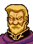

Narration
ドリアスの進言をいれ、海岸ぞいに
レンスターを目指すリーフたち
しかし、この公路を通って
レンスターにたどり着くためには
『ノルデン砦』と呼ばれる
帝国の砦を突破しなければならない
そこには、フリージの精鋭軍団が配備され
『解放軍』の進撃を阻もうとしていた
Opening 1

ケンプフ、備えは万全だろうな
お任せください、ニカラフ将軍
やつらは解放軍などと自称しておりますが
その戦力たるや山賊以下です
わが一軍でもって
やすやすと打ち破って
ごらんにいれましょう
やすやすと、だと？
ほざくな！ 小僧！！
ダンドラム要塞の責任者でありながら
部下を捨て置いて
一人おめおめ逃げ帰ってきたのは誰か！
やつらはレンスターのランスリッターだ
リーフ王子を盟主にいただき
また、祖国を目の前にして
その士気は天にもとどかんばかりだ
なめてかかると
死を呼ぶことになるぞ！
はっ・・・
申し訳ありません・・・
きさまの部隊はここで橋を死守せよ
石弓部隊が後方より支援する
その射程から出て戦うことは許さん！
よいか、これは命令だぞ！！
はっ・・・
総攻撃は
アルスターからの援軍が来てからだ
前後より挟撃し、一気に敵を撃破する
アルスターから援軍が？
そうだ
コノモール伯爵が
１００騎ほど従えてやってくる
敵は、北トラキア最強の軍団に
背後から攻撃を受けるというわけだ
なるほど・・・
だが、それでは俺の手柄にはならん・・・
なんとかやつらを
俺の手で討ち取りたいものだが・・・
Opening 2

王子、先発した兵からの知らせです
敵の陣形はこのようになっております

ノルデン砦の周辺に
石弓の大部隊か・・・
これを何とかしないと砦は落とせないな
川向こうにわたるには
この橋を奪うしかありません
しかし、装甲軍団が守備を固めており
シューターの射程内で戦うのは
われらが不利です
ということは
この装甲軍団を射程の外に
誘い出せばいいんだな
しかし
そうやすやすと敵が動くとも
思えません
だが、一考の価値はあると思う
なにかしら方法があるはずだ・・・
Only if Olwen is deployed

リーフ様、その役目、私にお与えください
私はあの指揮官を知っています
私なら彼を橋から誘い出して見せます
オルエンが！？
だめだ
そんな危険なマネはさせられない
お願いです
私は王子のお役に立ちたいのです！！
Turn 2
.png)
神父様、外では戦が始まるようです
今出られては危険です
もう少しこの家でお休みください

はい
ではお言葉にあまえて・・・
Enemy turn 2

ちっ・・・
なんであんなバカの前衛に
俺がつかねばならん
平民の俺は、しょせんは
貴族どもの盾に
すぎないということか・・・
Enemy turn 20

よし、全軍一体となって突撃せよ
アルスターの名に恥じぬ戦いをするのだ！！

コノモール様、本当によろしいのですか？
われらは勝っても負けても
祖国を失うことになります
この機会を失えば
もう二度と祖国奪回の機会は・・・
わかっている
だが、われらが裏切れば
人質となっておられる
ミランダ姫のお命は奪われてしまう
姫はまだ１５才・・・
あの暗い僧院で命を終えられるには
あまりにお若すぎると思わぬか・・・
Talk: Karin → Ilios Karin the headhunter

ねえねえ
おにいさんってば・・・
なんだ？
おまえは？
俺の前をちょろちょろするな！
ねぇ、お願いだから
私たちに味方してくれない？
おいおい
とうとつになにを言い出すんだ
ヘンなやつだな
まったく・・・
やっぱりだめ？・・・
まあ、だめだとは思ったけどね
じゃ、いいわ
さよなら・・・
おい！
ちょっと待て！
なあに？
いいぜ
条件によってはねがえっても
ホント！
それで、条件ってなに？
そうだな
もしレンスターが復興したら
俺を貴族にするってのはどうだ
そんなのは簡単だと思うけど
あなた、貴族になりたいの？
もしかして平民なの？
じゃあ、すごい努力家なのね
平民で上級騎士なんて
フリージ軍じゃめずらしいもの
平民平民って言うな！
そうだよっ
確かに俺は平民出だが
何も恥じてるわけじゃないぞ
俺は平民であることに
誇りを持っているんだ！
だったら
何も貴族になることはないのに
まあ・・・
そうだが・・・
いいだろ、そんなことは！
私はカリンって言うの
あなたのお名前は？
お、俺はイリオスだ・・・
名前だけはすごく貴族っぽいね
もしかして、偽名？
ばかを言うな！
偽名じゃねえよ！
オヤジが
貴族にあこがれてつけた名前だ
俺の本名だ！！
じゃあ
あなたの貴族コンプレックスは
その名前のせいね
変えた方がいいと思うわ
イリオスじゃなくて
オルソンにしなさいよ
その方がぜったいに
にあっているから
オ、オルソンだとぅ・・・
おい、人の名前を勝手に・・・
じゃ、オルソンさん
私たち今から仲間よ
よろしくね！
お、おい・・・
Talk: Olwen → Kempf
ケンプフ将軍
久しぶりですね
おまえはオルエンだな！？
この裏切り者め！！
私が裏切り者なら
あなたは負け犬ね
いえ、おくびょう者だわ
な、なんだと！！
俺がどうしておくびょう者なんだ
あなたには戦う勇気などないのでしょう
ダンドラムでも逃げ回っていたそうだし
今だって兵士たちの
陰に隠れてふるえているだけ
それではラインハルト兄様には
永久に勝てないわ！
ぐぐぐ・・・言わせておけば！！
誰か！ この女を捕えろ！！
きさまら、一人残らず殺してやる・・・
殺してやるぞ！！！
リーフ様
私の役目は終わりました・・・
どうか、ご武運を・・・
Enemy phase right after Talk: Olwen → Kempf
おい、全軍に突撃を命じろ！
敵の首をあげたものには
賞金をやると言え！
やつらを
一人残らず討ち取るのだ！
ま、待ってください、将軍！
それでは
ニカラフ将軍のご命令に反します！
勝ちさえすればどうとでもなる
俺の家は王家の一門であることを
忘れたか！
全軍！ 突撃せよ！！
敵を討ち取れ、一人も逃がすな！！！
Right after defeating any Ulster unit
・・・さすがは
レンスターのランスリッターだな
ここは一度ひいたほうが得策か・・・
全軍、これより撤退にうつる！
House central sandbank
If Leif visits
ああ、あなたはリーフ様ですね！
はい
ソルウッドの司祭から
あなたに会うように言われました
でも、どうしてわかったのですか？
ブラギの塔で見た通りだ・・・
ツヴァイの光をもつ少年・・・大いなる力・・・
クロード様・・・
あなたのおっしゃられた通りです・・・
ブラギの塔？
ツヴァイの光？
いったいなんのことですか？
いずれ時が来れば
おわかりになるでしょう
リーフ王子
しばらく私も同行させていただきます
よろしいですね
If someone other than Leif visits
神父様はお休みです
誰にも会いたくないと
おっしゃっています
House 2nd from the left
.png)
まったく、北トラキア王国に
このあたりが編入されてから
ろくなことはない
レンスターの時代が
なつかしいよ・・・
あのころは遠くまで
出稼ぎに行ってたが
今じゃおちおち旅もできねえ
いらなくなったから
このカギ、やるよ
House leftmost
.png)
え、あなたたち
レンスターゆかりの
方たちなんですか？
じゃあ
またレンスター王国の
世の中になるんですね
これ、せいすいです、使ってください
お礼なんていりません
わたしたちもお役に立ちたいんです！
House centre bottom
.png)
おまえさんがた
このトラキアを解放するために
戦ってくださってるそうじゃの
この『騎士の勲章』をさしあげるから
トラキアを解放できる日まで
がんばってくだされや
After seizing

王子、おみごとです
この困難な状況に
よく打ち勝たれました
祖国レンスターは目の前です
国民は王子の帰還を
待ちわびておりますぞ
レンスター・・・わが祖国・・・
さよう、王子はまだ幼かったゆえ
覚えておられぬかも知れませぬが・・・
覚えているさ
特にあの夜のことは
生涯忘れることはないだろう
あの夜のこと？
レンスターが落ちた夜・・・
空は舞い上がる炎で真っ赤だった
ぼくはフィンの腕の中で
ただぼうぜんと空を見上げていた
始めはよくわからなかったんだ
でも、フィンの顔を見たとき
突然深い悲しみがこみあげてきた
あんなに悲しい思いをしたのは
生まれてはじめてだった・・・
フィンにはつらい役目を押し付けました
だが
彼以外に王子をたくせる者はいなかった
王子さえ無事なら
いつの日か必ずレンスターはよみがえる
そう言い聞かせて
焼け落ちる城から脱出させたのです
フィンの涙を見たのは
あの日が最後だった
あれ以来、泣くことも・・・
いや、笑うことすら
忘れてしまったようだ・・・
彼の心は
今もレンスターにあるのでしょう
いや、彼だけではありません
われらはみな
レンスターに心をおいてきたのです・・・
If Conomor has been made to retreat
しかし
後ろからアルスターの軍が現れたときは
正直、どうなるかと思った
敵の足なみの乱れが
われらを救ってくれました
しかし
さすがは、コノモール伯爵
利あらずと見るや
すぐに兵をまとめるあのすばやさは
敵ながら天晴れでしたな
コノモール伯爵？
アルスターきっての勇将で
義を重んじる心、祖国への愛国心も
人一倍持っている優れた騎士です
なぜそれほどの男が
帝国に味方するのだろう？
この帝国の圧政を
なんとかしようとは
思わないのだろうか？
やむにやまれぬ
事情があるのでしょう・・・
いずれにせよ
もう一度戦いたくはない相手であるのは
まちがいありませんな
Kempf: battle quote
くそっ
貴様らさえいなければ
貴様らさえいなければぁっ
Kempf: defeat quote
ばかな・・・
こ、この俺が・・・
こんなやつらに・・・
Kempf: release quote
おのれ・・・
このことは忘れんからな！
覚えておれ！
Brook: battle quote

反乱軍ども！
わが刃、受けれるものなら
受けてみよ！
Brook: defeat quote
ぐぐ・・・これで終わりでは・・・
ない・・・ぞ・・
Brook: release quote
このわしも
なめられたものだ・・・
Ilios: battle quote
俺と戦うつもりか？
ふんっ、おもしろい
貴様にこのイリオス様が
倒せるのか！
Ilios: defeat quote
俺はけっきょく
平民のままで終わるのか・・・
Ilios: release quote
ちっ・・・
平民だと思って
こき使いやがって・・・
もう、やってられねぇぜ
Conomor: battle quote
おまえたちにうらみはないが
これも運命、許せ！
Conomor: defeat quote
アルスターが・・・
ふたたび・・・
よみがえらんことを・・・
Conomor: release quote
ぬう・・・
生き恥をさらさねば
ならぬか・・・